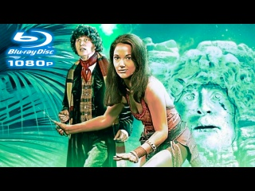
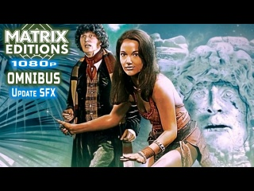
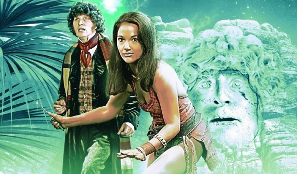
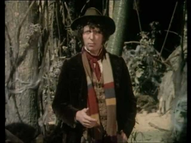

Субтитры: Русские {Антон Линевский} и Английские |  |
|---|---|
с обновлением визуальных эффектов (cunningmunki) Субтитры: отсутствуют |  |
The Face of Evil
Дата выхода: 1-22 января 1977
Формат: 4 эпизода по 25 мин.
|
ТАРДИС приводит Доктора на планету, где два племени — Севатим и Теш — ведут бесконечную вражду, не подозревая, что оба происходят от экипажа земного корабля, когда-то потерпевшего крушение. Севатим поклоняется божеству Ксанону, заточённому за невидимой стеной, но Доктор с ужасом узнаёт в нём искусственный интеллект, повреждённый им самим во время прошлого визита. Его собственный лик, высеченный в горе, смотрит на племя как лицо зла. Дебют Лилы — воительницы из племени Севатим, которая бросает вызов традициям и присоединяется к Доктору, — и серия остаётся одной из немногих, где главным антагонистом выступает сама прошлая ошибка Доктора.
VHS - май 1999 | DVD - 5 марта 2012 | Blu-ray - 4 мая 2020 * Версия в нашей группе |
|---|

